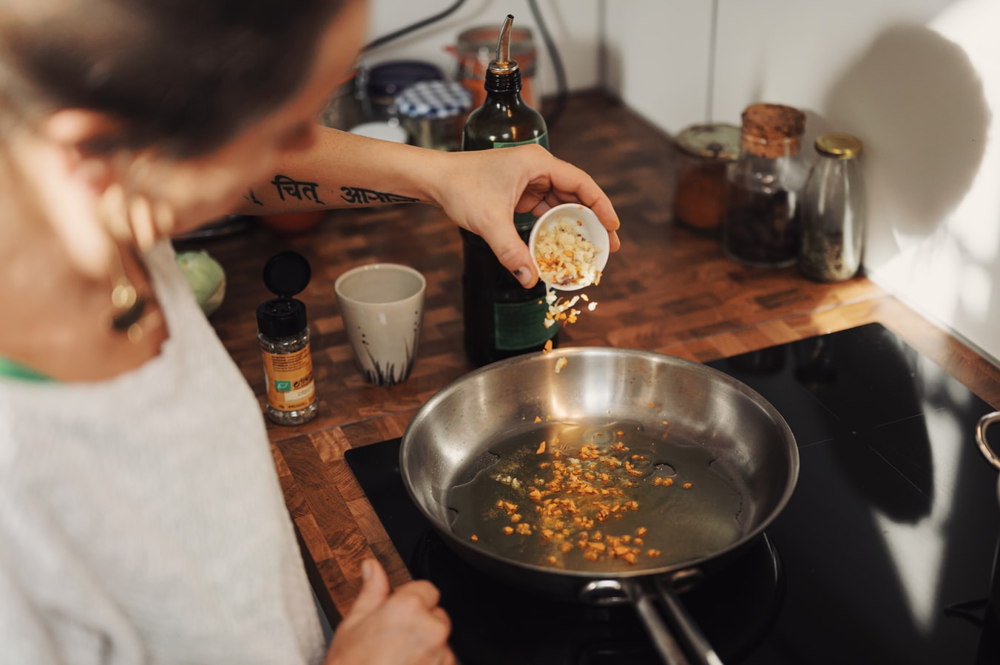
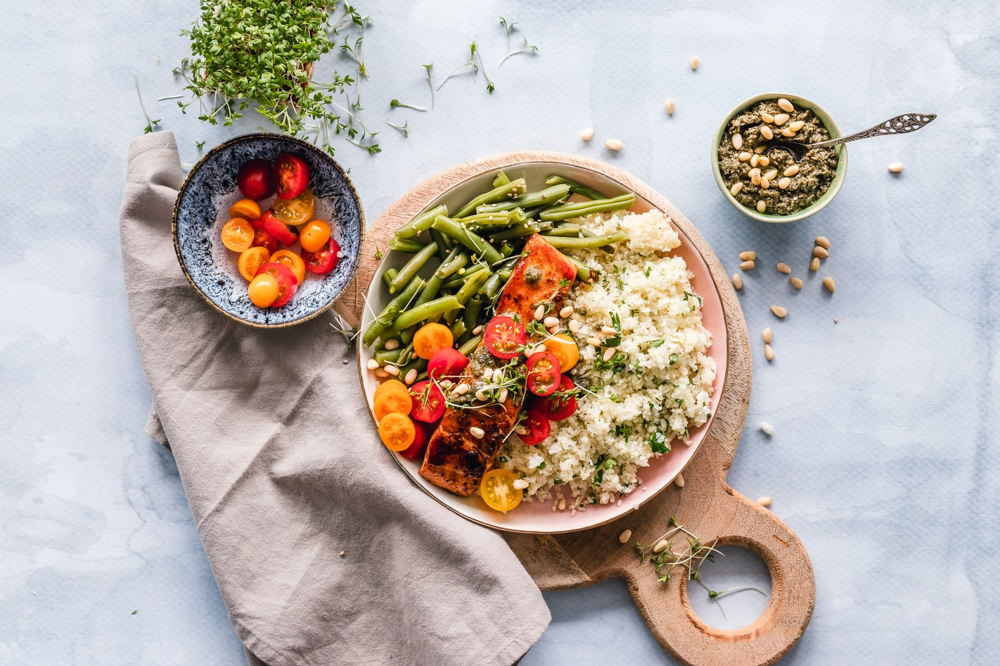
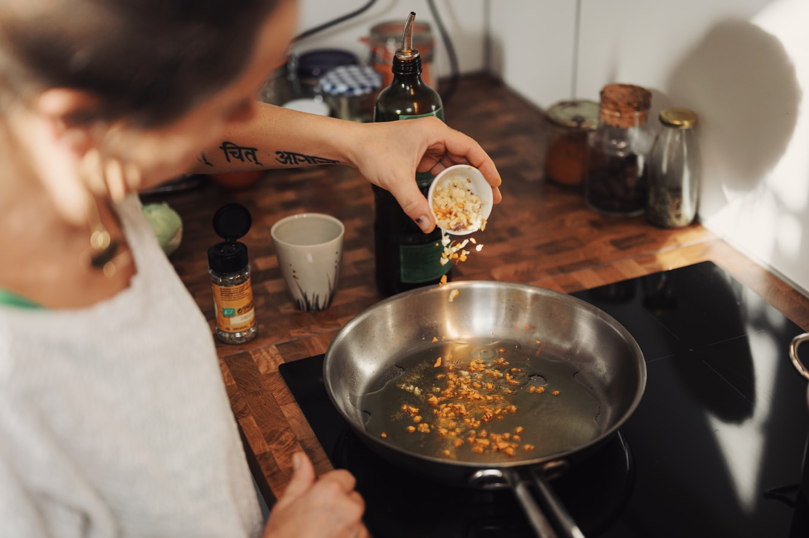
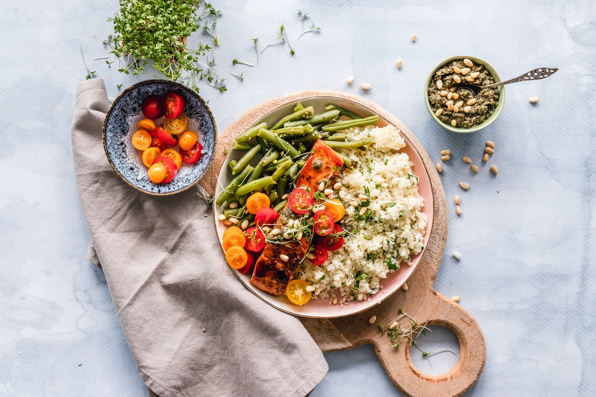

Are you about to leave home to either be independent or go to university? Have you ever had a time when you had to store a specific recipe? Have you ever lost a recipe that you wrote down and you can't find it? As there is nothing like home-cooked, mums style cooking, Your problems have been answered. A place for you to add your recipes, A place for you to share them with the rest of the world. A place for you to even search depending on what specific ingredient you want to use.